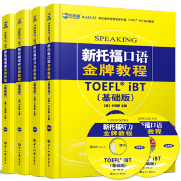
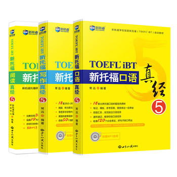

杭州托福培训哪家好？这个也是大多数学生的疑惑，今天小编就在这给大家支几招，希望能帮大家更好的进行选择。
1.口碑
口碑可以说是第一印象，毕竟口碑也是大家评价的，大家都说好的话应该是不会差的。
2.师资
这点很重要，因为只有有能力的老师才能真正的教出优秀的学生。杭州新航道的老师都是经过专业培训后才会走上讲台为学生上课，而且每周都有研讨会，老师再不断提升的同时，对学生的帮助也是很大的。
3.教材
新航道所使用的教材基本上都是学校自主研发的，比如有《托福真经系列》、《托福金牌教程》等，相信大多数考生也有在用。

4.培训费用
托福培训班学习费用是多少？相信也是大家比较关心的。培训学校不同费用也天壤之别，但是不见得越贵就越好，要根据课程进行多方面的考虑，所以在选择学校时还是要选择像杭州新航道学校这样性价比比较高的学校。
5.培训效果
说到培训效果，大家也可以参考以上的信息，并不是费用决定效果，所以大家在选择的时候还是要慎重的。一个重要的参考信息就是高分学员，杭州新航道的高分学员是全杭州最多的一家，大家可以在官网上看到。
6.环境和服务
杭州新航道地处杭州市区，交通便利。杭州新航道的学员众多，也便于大家在学习中一起讨论。杭州新航道还有专业的助教，全程监督学生学习，及时帮助学生解决问题。